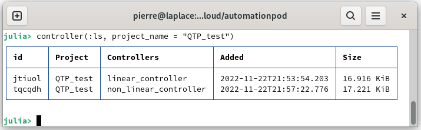
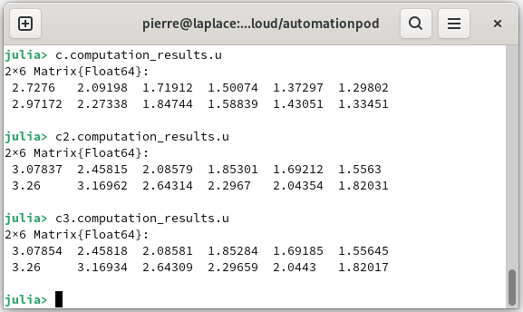

Tune your first controller
From a model, it is possible to create a controller based on model predictive control, and it will be saved on the database. It can be set to be linear or non-linear and the solver can be selected by the user or automatically. In addition, it will be possible to calculate the controller from the initialization of the states to compute the optimal state and input control. In this tutorial you will learn:
- Prepare a model for tuning a controller
- Tune a linear controller
- Tune a non linear controller
- Tune a mixed integer controller
- Calculate a controller
- Delete a controller
Prepare a model for tuning a controller
The following steps are identical to the section Tune your first model they are developed to tune a non-linear model, needed to tune the controller. You can go to the next section if you already have the model.
Launch AutomationLabs on Julia:
julia> using AutomationLabsCreate a project, if not already created:
julia> project(:create, name = "QTP_test")Load the data from a quadruple tank process [1] on the repository data. The data of the dynamical system inputs can be added (you can have a look on Manage your first data):
julia> data(
:add;
project_name = "QTP_test",
path = "paht_of_the_CSV_file",
name = "data_inputs_m3h",
)The outputs of the dynamical system can be added to the database:
julia> data(
:add;
project_name = "QTP_test",
path = "paht_of_the_CSV_file",
name = "data_outputs",
)Create the io data with bound on the raw data:
julia> lower_in = [0.2 0.2 0.2 0.2 -Inf -Inf]
upper_in = [1.2 1.2 1.2 1.2 Inf Inf]
lower_out = [0.2 0.2 0.2 0.2]
upper_out = [1.2 1.2 1.2 1.2]
data(:io;
inputs_data_name = "data_inputs_m3h",
outputs_data_name = "data_outputs",
project_name = "QTP_test",
data_name = "io_qtp",
data_lower_input = lower_in,
data_upper_input = upper_in,
data_lower_output = lower_out,
data_upper_output = upper_out,
)Tune a non-linear model for dynamical system identification, such as:
julia> using Dates julia> model(:tune;
project_name = "QTP_test",
model_name = "model_qtp_nonlinear",
io = "io_qtp",
computation_solver = "radam",
computation_maximum_time = Dates.Minute(15),
model_architecture = "fnn",
)You now have a model of the quadruple tank process. It is now possible to go to the creation of the controller to control the dynamic system.
Tune a linear controller
The first desired controller is a linear model predictive control with a quadratic cost function. To learn more about the control you can go to the guides section:
The linearization of the non linear model is performed at the state and input references. However, it is required to defined the constraints and the references, such as:
julia> hmin = 0.2;
h1max = 1.36;
h2max = 1.36;
h3max = 1.30;
h4max = 1.30;
qmin = 0;
qamax = 4;
qbmax = 3.26;
#Constraint definition:
mpc_lower_state_constraints = [hmin, hmin, hmin, hmin]
mpc_higher_state_constraints = [h1max, h2max, h3max, h4max]
mpc_lower_input_constraints = [qmin, qmin]
mpc_higher_input_constraints = [qamax, qbmax]
mpc_state_reference = [0.65, 0.65, 0.65, 0.65]
mpc_input_reference = [1.2, 1.2]Now we can set up the controller:
julia> c = controller(:tune;
project_name = "QTP_test",
model_name = "model_qtp_nonlinear",
controller_name = "linear_controller",
mpc_controller_type = "model_predictive_control",
mpc_programming_type = "linear",
mpc_lower_state_constraints = mpc_lower_statie_constraints,
mpc_higher_state_constraints = mpc_higher_state_constraints,
mpc_lower_input_constraints = mpc_lower_input_constraints,
mpc_higher_input_constraints = mpc_higher_input_constraints,
mpc_horizon = 6,
mpc_sample_time = 5,
mpc_state_reference = mpc_state_reference,
mpc_input_reference = mpc_input_reference,
) where project_name is the related project, model_name is the name used for tuning the controller, mpc_controller_type is the related control, mpc programming_type is the implementation method, mpc_lower_state_constraints is the state constraints, mpc_higher_sate_constraints is the state constraints, mpc_lower_input_constraints is the input control constraints, mpc_higher_input_constraints is the input control constraints, mpc_horizon is the horizon length, mpc_sample_time is the time between two samples, mpc_state_reference is the state reference and mpc_input_reference is the input reference related to the model predictive control.
You can list the controller from the project:
julia> controller(:ls, project_name = "QTP_test")
Tune a non-linear controller
Previously we tuned a linear controller, we can also tune a non linear controller easily by changing the parameter mpc_programming_type, such as:
julia> c2 = controller(:tune;
project_name = "QTP_test",
model_name = "model_qtp_nonlinear",
controller_name = "non_linear_controller",
mpc_controller_type = "model_predictive_control",
mpc_programming_type = "non_linear",
mpc_lower_state_constraints = mpc_lower_state_constraints,
mpc_higher_state_constraints = mpc_higher_state_constraints,
mpc_lower_input_constraints = mpc_lower_input_constraints,
mpc_higher_input_constraints = mpc_higher_input_constraints,
mpc_horizon = 6,
mpc_sample_time = 5,
mpc_state_reference = mpc_state_reference,
mpc_input_reference = mpc_input_reference,
mpc_solver = "ipopt"
) where project_name is the related project, model_name is the name used for tuning the controller, mpc_controller_type is the related control, mpc programming_type is the implementation method, mpc_lower_state_constraints is the state constraints, mpc_higher_sate_constraints is the state constraints, mpc_lower_input_constraints is the input control constraints, mpc_higher_input_constraints is the input control constraints, mpc_horizon is the horizon length, mpc_sample_time is the time between two samples, mpc_state_reference is the state reference, mpc_input_reference is the input reference related to the model predictive control and mpc_solver allows you to choose the resolution solver.
You can list the controller from the project:
julia> controller(:ls, project_name = "QTP_test")
Tune a mixed integer controller
Previously we tuned a non-linear model based on feedforward neural networks. The activation functions were relu. In this case it is possible to take into account the particularity of this activation function to reformulate the optimization problem with integer numbers. We can tune a controller with mixed integer programming, such as:
julia> c3 = controller(:tune;
project_name = "QTP_test",
model_name = "model_qtp_nonlinear",
controller_name = "mixed_linear_controller",
mpc_controller_type = "model_predictive_control",
mpc_programming_type = "mixed_linear",
mpc_lower_state_constraints = mpc_lower_state_constraints,
mpc_higher_state_constraints = mpc_higher_state_constraints,
mpc_lower_input_constraints = mpc_lower_input_constraints,
mpc_higher_input_constraints = mpc_higher_input_constraints,
mpc_horizon = 6,
mpc_sample_time = 5,
mpc_state_reference = mpc_state_reference,
mpc_input_reference = mpc_input_reference,
)where project_name is the related project, model_name is the name used for tuning the controller, mpc_controller_type is the related control, mpc programming_type is the implementation method, mpc_lower_state_constraints is the state constraints, mpc_higher_sate_constraints is the state constraints, mpc_lower_input_constraints is the input control constraints, mpc_higher_input_constraints is the input control constraints, mpc_horizon is the horizon length, mpc_sample_time is the time between two samples, mpc_state_reference is the state reference andmpc_input_reference is the input reference related to the model predictive control.
You can list the controller from the project:
julia> controller(:ls, project_name = "QTP_test")
Calculate a controller
We can calculate the controller with a state intialization (or state measure), such as:
julia> initialization = [0.6, 0.6, 0.6, 0.6]julia> c = controller(:calculate; initialization = initialization, predictive_controller = c)
c2 = controller(:calculate; initialization = initialization, predictive_controller = c2)
c3 = controller(:calculate; initialization = initialization, predictive_controller = c3)where initialization is the state initialization or the state measure and predictive_controller is the controller to calculate.
We can retrieve the computed state:
julia> c.computation_results.x
c2.computation_results.x
c3.computation_results.x
We can retrieve the computed input control:
julia> c.computation_results.u
Delete a controller
It is possible to delete the tuned controllers from the database, such as:
julia> controller(:rm, project_name = "QTP_test", controller_name = "non_linear_controller")Reference
[1] Blaud, P. C., Chevrel, P., Claveau, F., Haurant, P., & Mouraud, A. (2022). ResNet and PolyNet based identification and (MPC) control of dynamical systems: a promising way. IEEE Access.